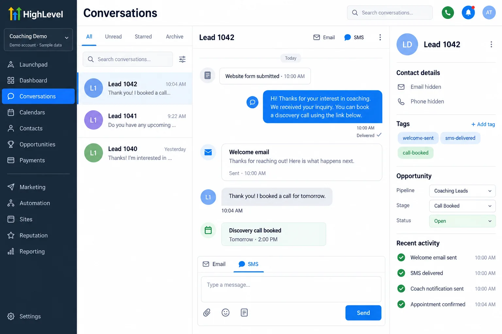
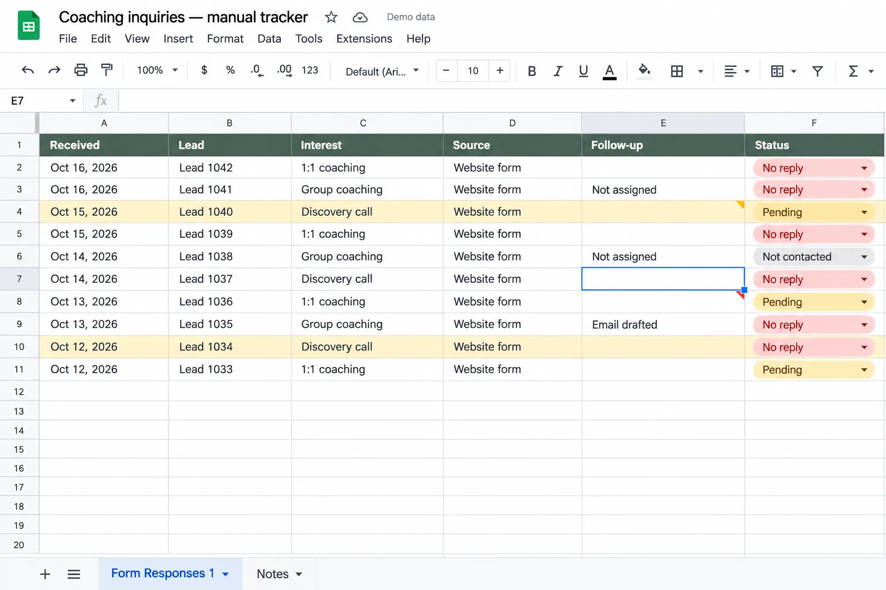

before

Project 01 · Coaching business
The leads that never got a reply
A simple fix for leads that were quietly going nowhere.
- Before: the messForm leads landed in a spreadsheet nobody checked, so people waited days to hear back, if they heard back at all.
- What I didConnected the form to the CRM, added an instant welcome email and text, and a ping to the coach's phone for every new lead.
- After: what changedEvery new lead hears back right away, and nothing slips through the cracks anymore.
GoHighLeveln8n